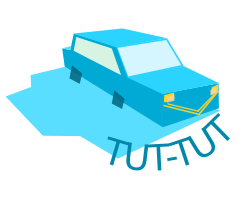
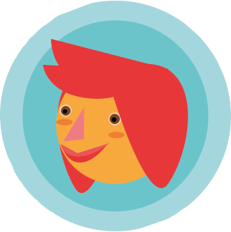
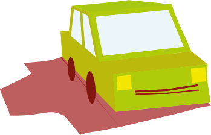

TUT-TUT, l'appli qui !
Embarquer dans l'aventure tut-tut
C'est moi qui conduis, c'est toi qui klaxonne!
Estelle, 25 ans
"Quand j'ai déménagé dans une autre ville, j'ai galéré pour trouver un 'copain' avec une voiture. Il me fallait du petit mobilier, mais en bus pas possible... et dans une ville ou je ne connaissais personne pour m'emmener... donc si TUT-TUT avait existé plus tôt, ça aurait été pratique!"
Luc, 21 ans
"Super initiative! il y en a marre des gens seuls dans leur Fiat Panda dans les bouchons! Si ça peut en plus permettre de moins polluer, je dis oui.
Jeromine, 27 ans
"Pour aller acheter mes nouveaux skis au "VieuxCampeur" ou me rendre au "Color Me Rad", Quai de la Ramée, TUT-TUT pourrait-être une solution sympathique et efficace."
RAPIDITE
- en un clic, vous trouvez votre autostoppeur ou votre conducteur.Grâce à la géolocalisation, les Tut-tuteurs les plus proches de vous et/ou sur votre route vous sont suggérés! -vous gagnez du temps en évitant de prendre des transports peu pratiques. vous évitez les métros blindés, les bus en panne et surtout transportez vos étagères Billy comfortablement assis dans votre fauteuil!


PARTAGE
- un moment convivial sur la route d'Ikéa ou du prochain Mud Day! intégrez la communauté Tut-Tut et soyez prévenus en avant première des évenements de nos partenaires -rencontrez vos nouveaux amis et, un TUT-TUT plus tard vous partagerez tout , même vos emissions carbone!
ECONOMIES
vous l'aurez compris, ce système vous permet d'économiser de l'argent sur vos trajets mensuels mais en plus, Tut-Tut fait les virements automatiquement et conserve l'historique détaillé de vos déplacements.